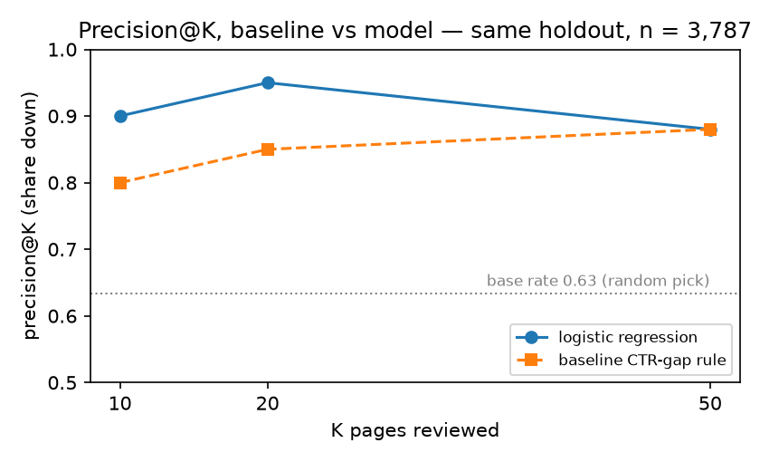
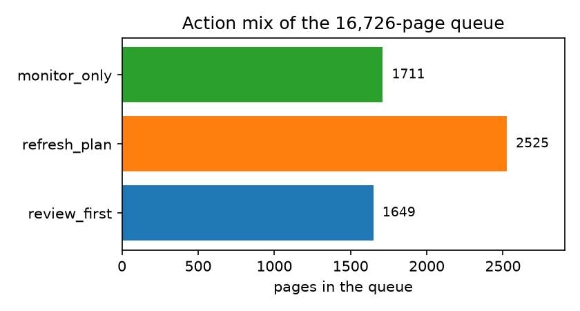

Question: FlyRank's content-review problem is triage at scale - which of thousands of published pages to open first - so the question here is whether a team, using only signals observed before the evaluation window, can be pointed at the pages most likely to go down before they go down.
Data: we rank 16,726 live pages from the FlyRank ML Internship dataset (28 anonymized clients, one export), using observed signals only - no future windows, no label-derived fields, no IDs as features.
Method: a transparent CTR-gap rule as baseline, plus a logistic regression on observed signals; both scored on a client-grouped holdout and re-audited on a second, later holdout with strictly pre-label-window features.
Result: the model lifts top-20 precision from 0.85 to 0.95 (AUC 0.572 → 0.638) on the same split with a 0.63 base rate, and the rule alone re-measures 0.90 precision@20 on a fresh window; the time-arm audit sits at chance (AUC 0.50).
What it's for: a ranked, tiered review queue (P1/P2/P3) that tells an editor which pages to open first - decision support that keeps a human in the loop, never automation of the edit itself.
This is the FlyRank content-refresh problem: customers publish pages continuously, performance drifts, and a weekly review decides which pages are refreshed first. In this case study - one anonymized export of FlyRank's content-performance warehouse - an editor has one hour and a list of 16,726 pages. Which pages should they open first? Without a score, "first" means whatever sorts to the top of a spreadsheet - and in our weak-pick study that is exactly how the habit rule lost: six of its top-20 picks were not currently down.
The cost of a wrong call is asymmetric. A missed declining page keeps losing CTR for weeks; a false pick burns one reviewer hour - cheap, but it adds up when the queue is long. This project builds a ranked queue so the hour lands on the pages where decline is most likely and most expensive.
The question is deliberately narrow: same-window triage, not prediction months ahead. We will show that the honest lead-time claim fails its own audit - and that the same-window claim survives it.
Source: content_refresh_anonymized.csv - the anonymized starter export of FlyRank's content-performance warehouse (a pseudonymous, one-row-per-page snapshot, no client names or raw queries anywhere). Raw export: 30,000 rows, 32 clients. Analysis slice after exclusions: 16,726 rows, 28 clients.
Excluded, with reasons:
impressions_90d < 500 or no real position (avg_position = 0) - below the volume floor the CTR signal is mostly noise.trend_direction / trend_pct as inputs - they are the label source; evaluation only.content_id, client_id) as features - grouping only, never predictors.Public-safety: everything here is pseudonymous category labels and anonymized IDs; no client-identifying detail appears anywhere in this paper or the repo.
A page is down when its standing evaluation trend_direction is "down" - measured on the same data as everything else, used only for evaluation, never as an input.
A rule an editor can verify by hand: score = (position ≤ 20) × gap-to-tier-median-CTR × log(1 + impressions). It flags 5,885 pages of 16,726 (35%). It is the fair comparison because it is measured on the same data, same split, same metrics as the model.
Twenty features, all observable at ranking time: log-transformed volumes (impressions, clicks, sessions, days with impressions, word count, search volume), raw observed fields (CTR, position, content age, days since last update, engagement rate, scroll rate, AI-traffic share), two missing-data flags, and five position-tier dummies. Missing keyword/word-count is flagged, not imputed as a real value.
All precision@K numbers carry their base rate next to them - with 0.63 of the test slice down, P@K alone flatters; AUC is the discrimination number.
| Model | P@10 | P@20 | P@50 | AUC |
|---|---|---|---|---|
| Baseline CTR-gap rule | 0.80 | 0.85 | 0.88 | 0.572 |
| Logistic regression | 0.90 | 0.95 | 0.88 | 0.638 |
| Random forest | 0.80 | 0.80 | 0.84 | 0.589 |
| Model | P@10 | P@20 | P@50 | AUC |
|---|---|---|---|---|
| Rule, rebuilt | 0.80 | 0.90 | 0.86 | n/a |
| Logistic regression | 0.70 | 0.80 | 0.76 | 0.626 |


What the errors look like - the honest part:
The queue (Week 7) sorts all 16,726 pages and assigns every pick a tier, an archetype, a reason code, and a human action:
| Tier | Pages | Action | When |
|---|---|---|---|
| P1 - review first | 1,649 | review_first | High-volume pages whose CTR gap vs their own tier is wide and whose decay risk is top-ranked. Open page + SERP, then update. |
| P2 - refresh plan | 2,525 | refresh_plan | Visible, aging pages with a measured gap. Plan a refresh in the next cycle. |
| P3 - monitor only | 1,711 | monitor_only | Below the action floor. Watch one more window; never burn a reviewer hour here. |
| not tiered | 10,841 | no_action | No signal above the floor. |
The human checklist before acting on any pick - 1) page text matches the query it ranks for; 2) the SERP intent fits the page (sub-intent mismatch explains many gaps); 3) tracker consistency between last and previous windows (a tracker break mimics a huge gap); 4) recent edit/warm-up history (young pages ramp, not decay); 5) only then decide: adjust text, plan a refresh, or watch one more window.
The no-go list (never automate):
Run it yourself. pip install -r requirements.txt, then execute the notebooks in order - each seeds and saves its own outputs; a fresh clone reproduces every number below.
Receipts and environment: seed 42 everywhere (split, models, permutation); sklearn 1.9.0, numpy 2.5.1, pandas 3.0.5. Every claim above traces to work/outputs/playbook_metrics.json (committed) or to the listed notebooks' committed outputs; the queue CSV is deliberately regenerated per run (CI blocks committing CSVs).
Built on the FlyRank ML Internship dataset - an anonymized export of real production content-performance signals, provided for the internship program: https://flyrank.ai. The data is real; the cohort design and all code are in the repository.